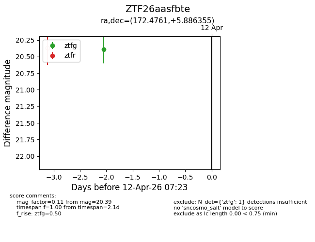
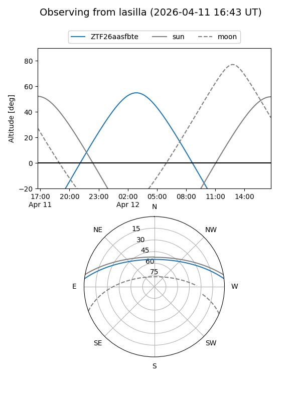
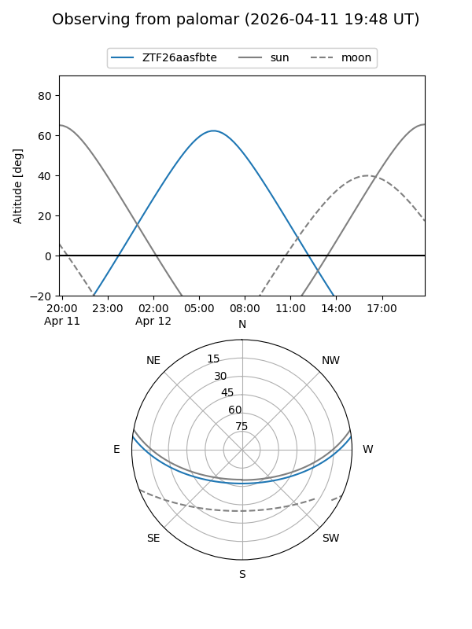

ZTF26aasfbte
Target ZTF26aasfbte at 2026-04-12 07:32
Aliases and brokers:
FINK: link
Lasair: link
ALeRCE: link
alt names
ZTF26aasfbte (ztf,fink_ztf)
Coordinates:
equatorial (ra, dec) = 172.4761,+5.88636
equatorial (HMS+DMS) = 11:29:54.26,+05:53:10.88
galactic (l, b) = (256.8744,+61.23783)
Flags:
Photometry:
last ztfg=20.39
1 ztfg detections
Lightcurve

Visibility


Additional plots